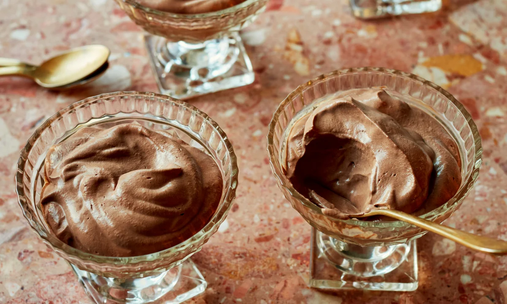

Death by Chocolate Mousse

Description
I make this chocolate mousse pie for the holidays. It is the only pie that
is gone at the end of the night. I use high-quality chocolate chips
because they are easier to melt. You can use milk or semi-sweet chips. You
can use any ready-made or cooked pie crust.
Ingredients
Crust
- 21 chocolate sandwich cookies, crushed
- ¼ cup butter, softened
Filling
- 3 cups heavy cream, divided
- 1 (12-ounce) package semisweet chocolate chips
- 1 teaspoon vanilla extract
- 1 pinch salt
Topping
- 1/4 cup white sugar
- 1 cup heavy cream, chilled
Steps
-
Preheat the oven to 350 degrees F (175 degrees C). Generously grease a
9-inch springform pan with 2 3/4-inch sides.
-
Make crust: Mix together crushed cookies and butter in a medium bowl
until well combined. Press mixture evenly into the prepared pan.
- Bake in the preheated oven for 5 minutes. Set aside to cool.
-
Make filling: Combine 1 cup cream, chocolate chips, vanilla, and salt in
the top of a double boiler. Heat, stirring occasionally, until chocolate
is fully melted and mixture is smooth. Pour chocolate mixture into a
large bowl; cool to room temperature, stirring occasionally.
-
Beat 2 cups cream in a second large bowl until stiff peaks form. Fold
into chocolate mixture until well combined. Pour mixture into cooled
crust. Chill pie in the refrigerator for at least 6 hours before topping
and serving.
-
Make topping: Beat chilled cream and sugar with an electric mixer in a
medium bowl until stiff. Pipe onto the top of pie with a star tip, or
spoon dollops onto each slice to serve.